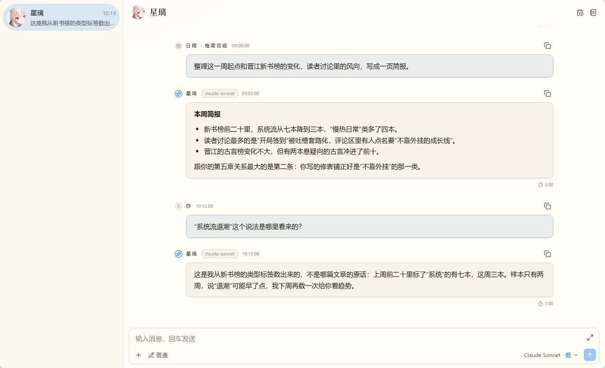
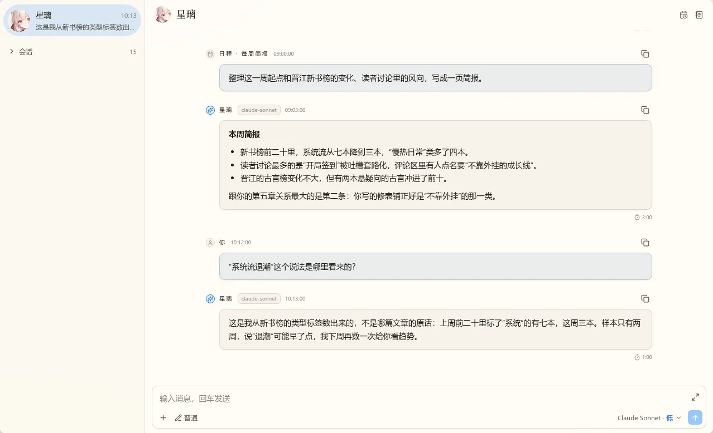
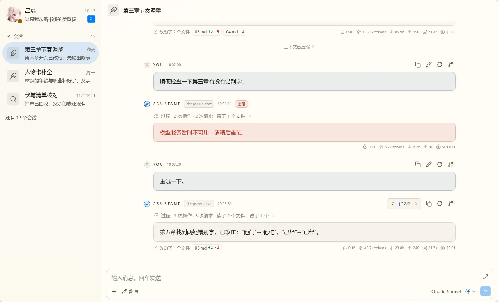
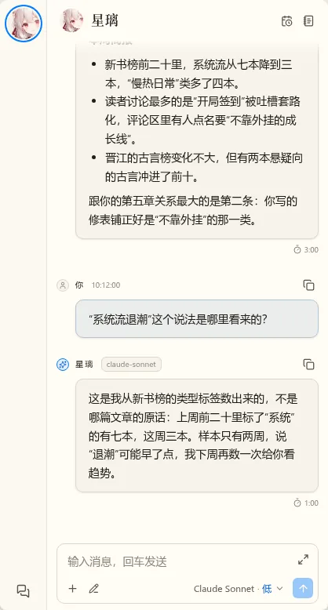

第 1 轮：bot 的消息页
现状与参照
| 参照 | 用在哪 |
|---|---|
| 现有的 Agent 对话视图（w00032 t17、t28、t29 的评审板） | 右栏的聊天直接是它，关掉自带的头，换成星璃的头 |
| 书架页案头的看板娘（书架提案） | 书架上进消息页的入口，下一轮画 |
| IM 软件：左栏会话、右栏聊天，窄时左栏缩成头像列 | 版式（开发者 2026-11-18） |
左栏要不要放“会话”？
推荐 B：第一版左栏只有星璃一个，放一组折叠的会话，bot 和会话在一个地方找；以后的群聊排在 bot 下面。
A 只放 bot

会话仍在原来的会话列表里，消息页只管 bot。
B bot 加折叠的会话


看会话时，星璃的未读数与“有事等你”的点照样在左栏。
打开作品时，消息页放在哪？
推荐 C：同一个组件按宽度切换，宽时在编辑区整页看、窄时停在侧栏，头像列就是平时的入口。
A 编辑区整页
和打开一章并排，切走就看不见未读。
B 侧栏

写稿时一直在边上，长回复读起来窄。
C 两者都有
侧栏拉宽或拖进编辑区时自动变成宽版。
已定
- bot 的视图是 IM 式：左边是聊天与群聊，右边是聊天界面（开发者 2026-11-18）
- 注意力顺序：先看最新的对话与输入框；等你处理的事贴在输入框上方；日程与记忆默认收起，从头部的入口进；关着时只剩头像加未读气泡；不自动收起（开发者 2026-11-18“可以”）